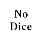

Sevenwondersdice
Board Game Arena 官方规则文档
Overview
A game plays over a series of roll-and-write turns during which players use dice to construct their cities. The game ends when one player has crossed off 3 bonuses. The player with the highest score wins.
Turn Structure
Each turn has two phases:
1. BGA rolls the dice.
Dice are rolled in a box called "the Forum." The forum is divided into four quarters. Each section is associated with a cost (0, 1, 2, or 3) to take an action based on that die.
2. Each player does one of three available actions:
- Construct a building
- Choose one of the 7 dice in the Forum associated with a building on your board. Pay its cost in the forum.
- Pay the construction cost (the number in a square under the symbol) using Resources and/or coins. (You must follow order of construction.)
- Cross off the space and gain the benefit from its effect.
- Construct a Wonder
- Pay the construction cost (the number in a square under the symbol) under your Wonder, using Resources and/or coins. No die must be chosen. (You must follow order of construction.)
- Cross off the space and gain the benefit from its effect.
- Pass and gain 3 coins
When all the spaces of a building are crossed off, you may gain one of three bonuses and gain its effect.
Dice and Buildings
| Die | Building | Description | Die Faces |
|---|---|---|---|
| Warehouse | Accumulates resources that reduce the cost of other buildings. Resources are never spent once unlocked. Completing the Warehouse does not earn a bonus. | Each represents 1 of the 6 resources. | |
| Barracks | The VP scored when a sword/axe space is crossed off is equal to the number of points shown in that space minus the number of shields crossed off in the neighboring city at that moment (i.e. the shield only affects axe/sword cells not yet crossed). | 2x Shield, 2x Axe, 2x Sword | |
| Agora | Scores VP. First player to cross off every space scores 3 extra VP. | Each represents 1 of the 6 rows/columns in the Agora. | |
| Market | Gains coins and resources. | 2x 7 Coins, 2x Camel, 2x Chest | |
| University | Grants ongoing bonus effects and unlocks special dice. | 2x tablet, 2x compass, 2x cog | |
| Guild Court | Player must have more spaces crossed off in the corresponding building than each neighbor to score VP here. | 1x Warehouse, 1 Agora, 1 Barracks, 1 Market, 1 University, 1 Wonder | |
| Gallery of Leaders | Crosses off spaces in other buildings. Must be unlocked first. | 1x red leader, 1 yellow leader, 1 green leader, 1 blue leader, 2x 1 VP per leader crossed off | |
| Spy | Allows crossing off any space in the corresponding building. Must be unlocked first. | 1 blue, 1 yellow, 1 red, 1 green, 1 gray, 1 red/blue/yellow/green | |
 |
Wonder | Each board's Wonder has unique actions. |
Game End and Scoring
When any player crosses off all three of their bonuses, all players take one more turn before scoring. BGA adds up the victory points for all buildings that the players have constructed. The player with the highest score wins.
On a tie, the player with the most unspent coins wins the game.